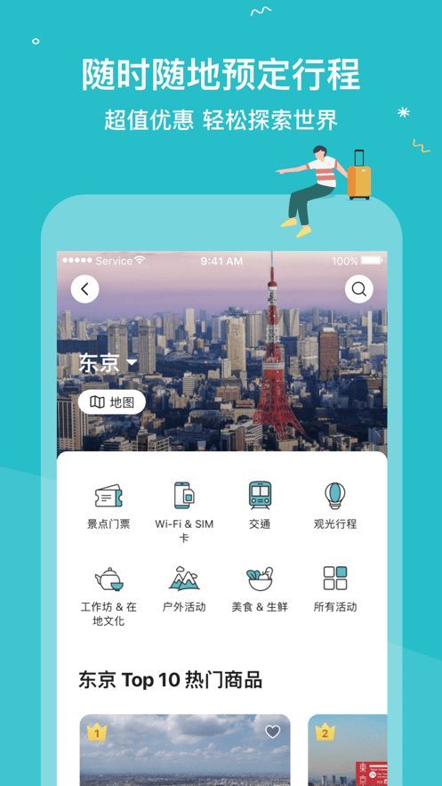
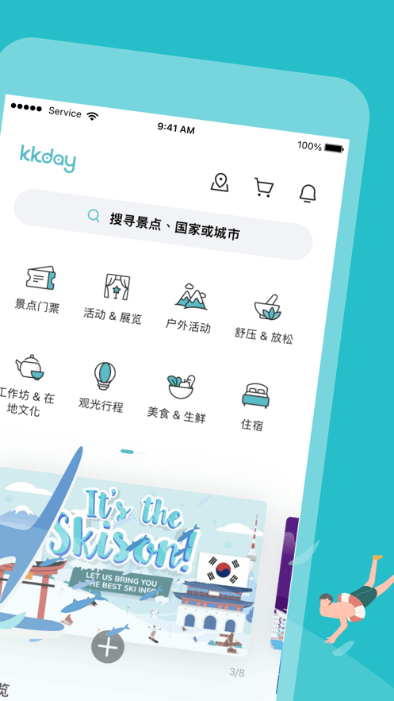

KKday 深度盘点：从下单到核销，这台旅行预订机器到底有多少零件
KKday 作为面向华语用户的境外活动预订平台，覆盖景点门票、包车接送、一日游等多条产品线。本文按能力域分组梳理其核心功能、预订节奏与常见坑点，帮你摸清这台机器的全部零件。
如果你是第一次去清迈、巴厘岛这类公共交通不太靠谱的目的地，大概率会被推荐通过 KKday官网订点什么——可能是一张大象营的门票，可能是机场到酒店的接送车，也可能是一整天的包车游。这个平台在华语出境游圈存在感很强，但它到底覆盖了哪些玩法、下单节奏有什么特点、凭证体系靠不靠谱，真正把这些摸清楚的人其实不多。
我把 KKday 的能力按几个维度拆解过一遍，从选品逻辑、预订流程到售后变更，每一块都有值得单独展开的细节。下面按能力域盘点，尽量不说空泛的"好用""方便"，只讲实际用起来会碰到的东西。
选品与浏览：覆盖有多广
KKday 的商品结构大致分几类：景点门票与活动体验（比如东京塔、济州岛泰迪熊博物馆）、包车与机场接送、一日游与多日游套票、当地玩乐（潜水、SPA、烹饪课），还有一些交通卡和 SIM 卡这类基础耗材。从页面呈现来看，它的城市粒度做得比较细——清迈能搜到七八个不同角度的一日游产品，巴厘岛的包车按车型和时长拆了至少十几种组合。

亮点在于它把"即时确认"和"需供应商确认"两种商品在筛选层做了明确区分。前者下单付款后凭证秒发，适合赶时间的场景；后者需要供应商排期确认，包车类基本都属这个品类，旺季可能要等几小时才有结果。这个区分不是随便写在商品页上的小字，而是真正影响下单节奏的核心逻辑——如果你当天晚上就要用，盯着"即时确认"标签筛就对了。
首页的分类入口也做了层次，热门目的地和当前促销放在最上面，下面按活动类型铺开。新用户第一次打开可能会觉得商品太多无从下手，但一旦知道自己要的是哪一类（比如就是要找包车），筛选条件够用，搜起来不费劲。

下单与支付：节奏要对得住商品类型
KKday 支持多币种付款，主流信用卡和常见支付方式都覆盖了。支付环节本身没有太多可说的，真正值得注意的是订单状态管理。不同商品类型的下单节奏差异很大，搞混了容易急。
即时确认类：选日期、填人数、付款、凭证直接进票夹，整个流程一分钟能走完。
需等确认类（包车、部分定制游）：付款后订单进入"确认中"状态，供应商核对排期和司机档期，通常几小时内会有结果。确认通过后凭证和司机联系方式同步发放；如果供应商排不开，整单自动退款。
这里有个容易踩的坑：不要重复下单。同一需求下两单，退款流程会拉长——尤其在包车这类需要人工确认的品类，重复订单会让客服和供应商都搞混。确认状态可以在订单记录里实时查看，凭证发放也不依赖邮件推送，所以真的不用急着点"再下一单"。
优惠码这块也有讲究：名额、消费门槛、适用品类三条线同时卡，兑换失败时要逐条对照活动规则，不是所有商品都能叠券。
电子凭证体系：境外信号差时的生命线
这是 KKday 做得最扎实的一块。它的凭证体系设计显然是针对"境外信号不靠谱"这个核心痛点做的，离线可用性是硬指标。
App 从下载拿就行，底部或"我的"页有凭证专区，名下所有订单的凭证按时间排列，点开就是完整凭证页。凭证页支持离线打开——这意味着在地下闸机口、信号盲区的场馆，只要出行前一晚打开过凭证页，现场调出来就没问题。
稳妥起见有三层兜底：出行前一晚逐张打开确认能正常显示；相册存一份完整截图（日期和人数栏要清晰）；邮箱留底，确认信里的凭证链接换设备也能打开。这三条我在现场核销时真正用上过一次——某次在济州岛的水族馆，App 打不开，截图顶上的二维码照样被闸门扫过去了。
扫码失败的常见原因也值得提前知道：屏幕亮度不足或贴膜折射（调高亮度再试就行）、凭证过期或日期不符（出发前一晚核对一遍比什么都强）、已核销过（QR 码兑换一次即失效，确认是不是被别人误用）。
变更与售后：规则比想象中紧
退款周期在kkday文档里写得清楚，官方口径是确认后 7 到 14 个工作日原路退回，供应商处理还需 2 到 5 个工作天，实际到账依发卡行。合计一到三周属正常区间，超期未到账再联系客服核对流水。
取消窗口偏紧是包车类商品的普遍问题，常见规则是"所选日期前两天免费取消"。行程没定下来的时候别太早锁定——订了再退虽然不是不能退，但耽误时间也麻烦。
凭证信息有误（姓名、日期）要尽早联系客服修改，尤其是实名票，改名可能视同重订，越早处理选项越多。
短板也要说
盘点了好的地方，局限性也得客观指出。
中文本地化深度有限。虽然界面支持中文，但商品详情页和供应商沟通环节，很多内容仍是半中文半英文状态。部分小众目的地的产品描述甚至只有英文，靠翻译插件读起来磕磕绊绊。
需确认类商品的等待时间不可控。包车类下单后到确认通过之间的空档，短则半小时，长则半天，旺季可能更久。如果你是当天急着订，这个节奏是跟不住的。
取消与退款规则因商品差异大。没有一个统一的取消政策，每个商品页的规则都要单独看。有的支持提前七天全退，有的是三天，有的概不退款。这个信息收集成本不低，新手很容易漏看。
什么样的人该用它
整理完这些，其实能画出一个比较清晰的用户画像。
第一次去出境自由行、对当地情况摸不准的人。KKday 把门票、接送、包车这些零散需求集中到一个平台上，不用一个个找当地服务商，尤其是公共交通不发达的目的地，包车接送这一项就能解决大问题。
习惯用中文界面、需要中文客服兜底的人。虽然中文本地化深度有限，但整个流程从浏览、下单到售后都有中文支持，遇到问题不用硬上英文沟通。
行程中需要订零散小项、不想为每个项目单独做攻略的人。比如去日本想订一张环球影城的票、去泰国想约一次 SPA，这类单次小项通过 KKday 下单的效率比直接去官网或找当地旅行社高得多。
这套预订逻辑的资料我同步到了三个仓库，方便不同环境访问——GitHub 主仓库维护原始版本，Gitee和GitCode作为国内访问的镜像，网络环境有限制时直接用镜像就好。